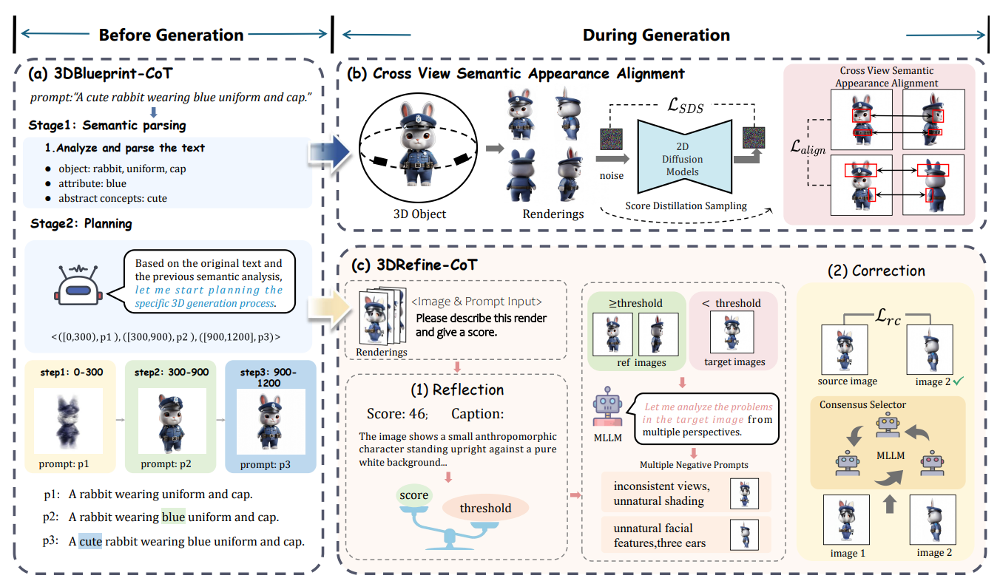
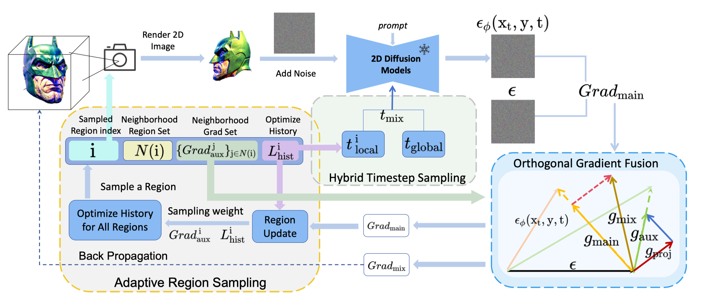
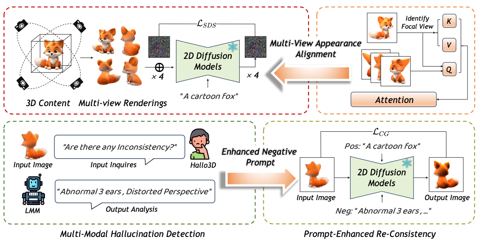
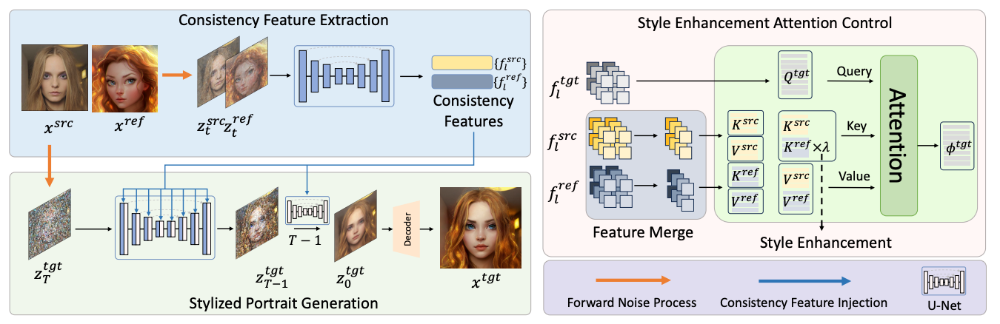
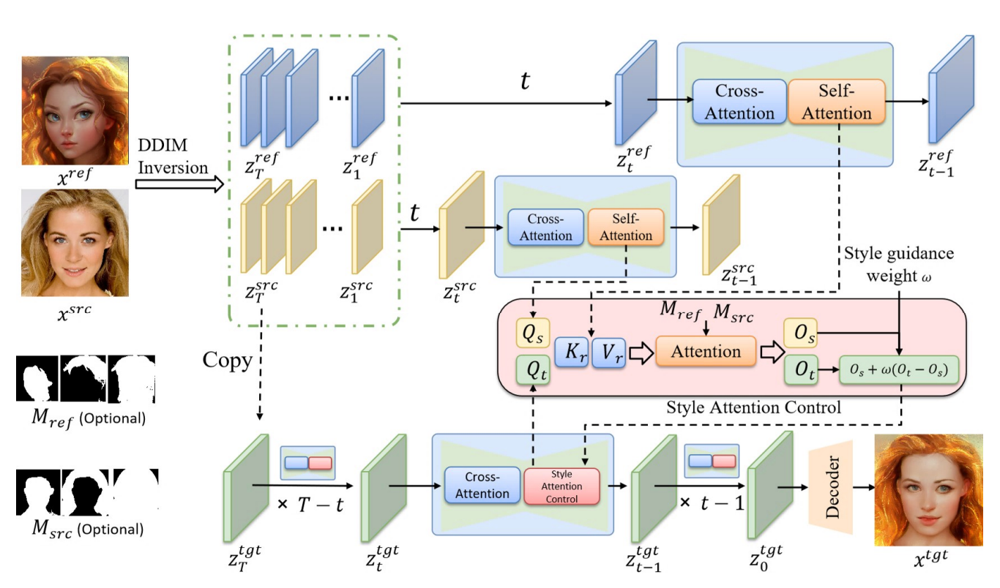

About Me
I am Jin Liu, a Ph.D. student jointly trained by ShanghaiTech University and NLPR@CASIA, Institute of Automation of the Chinese Academy of Sciences, supervised by Prof. Ran He. I am fortunate to have internships and collaborations with Honor, Alibaba, and ByteDance.
My current research interests include visual generation and multimodal large language models.
News
- Think-Then-Generate appears at CVPR 2026.
- CoGrad3D appears at AAAI 2026.
- As a contributor for Vidi2.5.
- Started internship at ByteDance.
- Started internship at Alibaba.
- Hallo3D appears at NeurIPS 2024, and ZePo appears at ACM MM 2024.
- Portrait Diffusion were released.
Experience
Technical Reports
Publications

Think-Then-Generate: Structural Chain-of-Thought Reasoning for Consistent 3D Generation
CVPR 2026 [Scholar]

CoGrad3D: Spatially-Coupled Timestep Optimization with Orthogonal Gradient Fusion for 3D Generation
AAAI 2026 [Scholar]
Rep2Face: Synthetic Face Generation with Identity Representation Sampling
ACPR 2025 [Scholar]

Hallo3D: Multi-Modal Hallucination Detection and Mitigation for Consistent 3D Content Generation
NeurIPS 2024 [Scholar]

PortraitDAE: Line-Drawing Portraits Style Transfer from Photos via Diffusion Autoencoder with Meaningful Encoded Noise
FG 2024 [Scholar]

Fine-grained Face Sketch-photo Synthesis with Text-guided Diffusion Models
ACPR 2023 [Scholar]